A Terra Entre Rios – A incrível história da Mesopotâmia
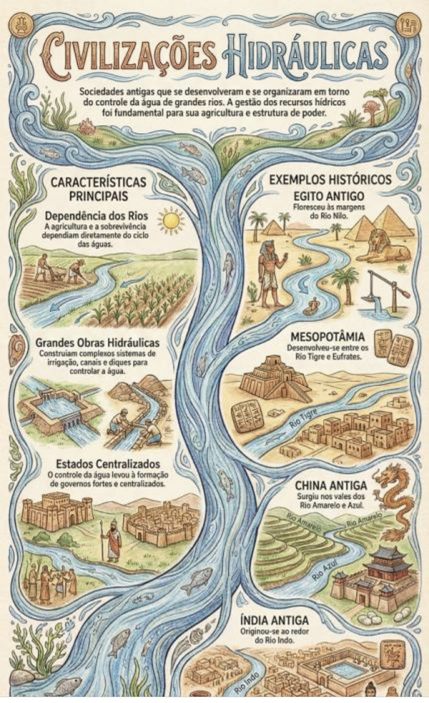
Muito antes das pirâmides do Egito ou das grandes cidades da Grécia e de Roma, existiu uma terra cheia de mistérios e invenções. Essa terra se chamava Mesopotâmia, que significa “terra entre rios”.
Mas que rios são esses? Os rios Tigre e Eufrates, que banham uma região que hoje fica no atual Iraque. Foi ali, entre esses rios, que surgiram algumas das primeiras civilizações da história.
Imagine um lugar onde o solo é fértil, graças aos rios que trazem água todos os anos. Os povos que viviam ali aprenderam a controlar a água por meio de canais e construíram plantações. Isso permitiu que deixassem de ser nômades e passassem a viver em cidades fixas, com casas, templos e mercados.
O primeiro povo que se destacou ali foram os sumérios. Eles inventaram uma das primeiras formas de escrita: a escrita cuneiforme, feita em tábuas de argila com sinais em forma de cunha. Também criaram leis, templos enormes chamados zigurates e até estudavam astronomia.
Depois vieram outros povos poderosos, como os acádios, babilônios e assírios. Cada um deixou sua marca. Um dos reis mais famosos foi Hamurábi, que mandou escrever um conjunto de leis conhecido como Código de Hamurábi, com a famosa ideia de “olho por olho, dente por dente”.
A vida na Mesopotâmia era cheia de novidades: eles criaram calendários, desenvolveram a matemática e o comércio, e seus templos eram centros religiosos e também de estudo.
Mesmo com guerras e mudanças, a Mesopotâmia foi um lugar muito importante, pois deu origem a muitas das coisas que usamos até hoje, como a escrita, as leis, a agricultura organizada e as cidades planejadas.
A história da Mesopotâmia nos mostra que, há milhares de anos, os seres humanos já eram criativos, organizados e cheios de ideias geniais. E tudo isso começou ali, na terra entre rios.
Exercícios
1. Onde ficava localizada a Mesopotâmia e o que significa esse
nome?
A Mesopotâmia ficava entre os rios Tigre e Eufrates, e seu nome
significa “terra entre rios”.
2. Qual foi uma das grandes invenções dos povos
mesopotâmicos?
A escrita cuneiforme, usada para registrar informações em tabuletas de
argila.
O Egito – A civilização das pirâmides e dos faraós
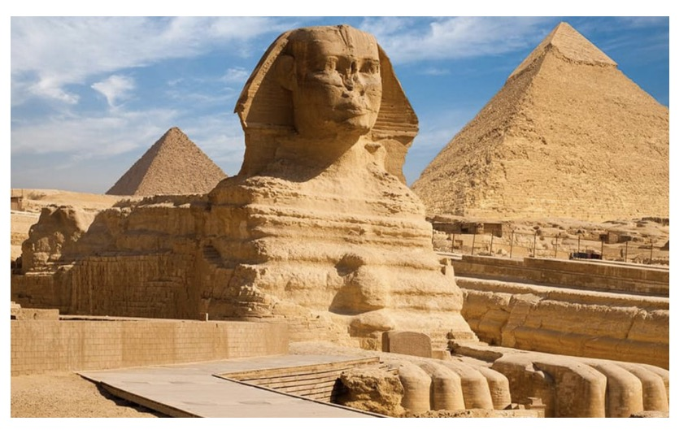
Você já imaginou viver em um lugar onde o rei era considerado um deus? Onde havia pirâmides gigantes, múmias e um rio que dava vida a tudo? Pois esse lugar existiu: era o Egito Antigo, uma das civilizações mais impressionantes da história.
Tudo começou às margens do Rio Nilo, no nordeste da África. O Nilo era como uma veia de vida no meio do deserto. Todos os anos, ele transbordava, molhava a terra e deixava o solo fértil.
Foi ali que os egípcios aprenderam a plantar, criar animais e construir suas primeiras vilas, que depois se tornaram grandes cidades.
No Egito, quem mandava era o faraó — um rei que também era visto como um deus na Terra. Ele controlava tudo: as leis, as construções, a religião e até os alimentos. Para os egípcios, manter o equilíbrio do mundo era dever do faraó.
Uma das maiores marcas dessa civilização são as pirâmides, como a de Quéops, em Gizé. Elas eram tumbas gigantescas, construídas para abrigar os corpos dos faraós após a morte.
Os egípcios acreditavam na vida após a morte e, por isso, faziam rituais especiais para preservar o corpo: a famosa mumificação.
Mas o Egito não era só pirâmide e múmia. Lá também surgiram muitas invenções: eles criaram uma forma de escrita chamada hieróglifos, faziam medicina, astronomia, matemática e organizavam o tempo com calendários baseados no movimento das estrelas.
A religião egípcia era politeísta — eles acreditavam em vários deuses, como Rá (o deus do sol), Ísis (a deusa da magia) e Osíris (o deus do mundo dos mortos).
Os templos egípcios eram enormes e belíssimos, com colunas gigantes e paredes cheias de desenhos coloridos.
Durante séculos, o Egito foi uma potência. Mas, com o tempo, foi sendo conquistado por outros povos, como os persas, os gregos (com Alexandre, o Grande) e os romanos.
Mesmo assim, o legado do Egito atravessou os séculos. Hoje, as pirâmides, as múmias, os deuses e os mistérios do Egito Antigo continuam encantando o mundo e nos lembrando de como aquele povo, há milhares de anos, já era sábio, criativo e grandioso.
A fascinante história da Grécia Antiga
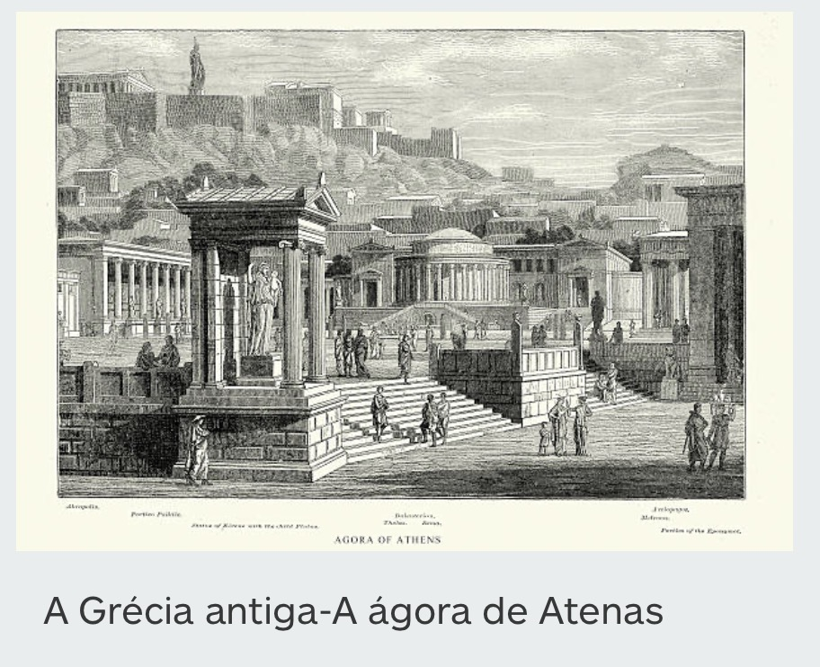
Você já ouviu falar dos deuses do Olimpo? De heróis como Hércules ou Aquiles? De cidades chamadas Atenas e Esparta? Pois bem, tudo isso faz parte de um lugar incrível chamado Grécia Antiga, onde nasceu boa parte da cultura que ainda influencia o mundo até hoje.
A história da Grécia começa há mais de 3 mil anos, em um lugar cheio de montanhas e cercado pelo mar. Lá surgiram pequenos povoados que, com o tempo, viraram cidades muito importantes.
Diferente de outros povos antigos, os gregos não tinham um único rei mandando em tudo. Cada cidade era independente e tinha seu próprio governo. Essas cidades eram chamadas de cidades-estado, também conhecidas como pólis.
Duas das mais famosas eram Atenas e Esparta.
Esparta era uma cidade militar. Lá, todos eram treinados para a guerra desde crianças. A disciplina era rígida, e os soldados eram temidos em toda a Grécia.
Já Atenas era bem diferente: era o berço da democracia, onde os cidadãos (homens livres e nascidos em Atenas) podiam participar das decisões políticas. Foi também em Atenas que surgiram grandes pensadores, como Sócrates, Platão e Aristóteles, além de artistas, arquitetos e escritores de teatro.
Os gregos também acreditavam em muitos deuses, como Zeus, Poseidon, Atena e Apolo. Eles achavam que os deuses moravam no Monte Olimpo e influenciavam tudo na vida dos humanos.
Para homenageá-los, faziam festas, rituais e até os Jogos Olímpicos, que começaram na Grécia.
Mas nem tudo era paz. As cidades gregas viviam em guerra umas com as outras. Depois de muitas disputas, a Grécia acabou sendo conquistada por Alexandre, o Grande, que espalhou a cultura grega por várias partes do mundo.
Mesmo depois de tantas mudanças, a Grécia deixou um legado valioso: ideias de liberdade, democracia, filosofia, arte e ciência.
Até hoje, quando estudamos a Grécia Antiga, aprendemos muito sobre como viviam, pensavam e criavam os povos que ajudaram a construir a nossa história.
Uma narrativa simples, envolvente e didática sobre a história da Roma antiga.
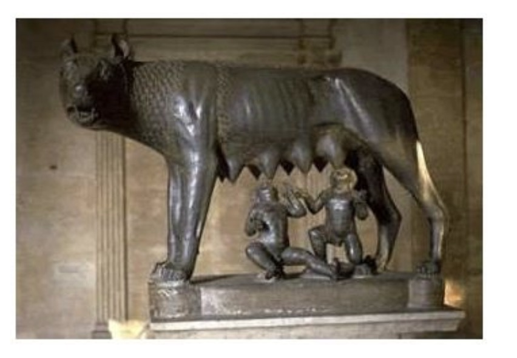
Era uma vez, há muito, muito tempo, um lugar chamado Roma, que começou de um jeito bem curioso: com uma lenda sobre dois irmãos gêmeos, Rômulo e Remo.
Diz a história que eles foram criados por uma loba. Quando cresceram, decidiram fundar uma cidade. Mas como não conseguiam se entender, Rômulo brigou com Remo e acabou fundando a cidade sozinho.
E foi assim que, segundo a lenda, nasceu Roma, no ano de 753 a.C.
No começo, Roma era apenas uma pequena vila. Mas, aos poucos, ela cresceu e se tornou uma das cidades mais poderosas da Antiguidade.
A história de Roma é dividida em três grandes fases:
1. Monarquia (reis)
Roma teve sete reis, e o último deles era tão cruel que o povo
resolveu acabar com a monarquia.
2. República (senadores)
Na República, os romanos criaram um sistema em que os cidadãos elegiam
seus representantes. Porém, nem todos podiam participar: mulheres,
escravizados e muitos pobres ficavam de fora.
Mesmo assim, Roma cresceu muito nessa época e conquistou várias terras.
3. Império (imperadores)
Depois de muitas disputas políticas, surgiu Otávio, que se tornou o
primeiro imperador romano.
Com ele começou o Império Romano, uma fase de grandes construções, como o Coliseu, batalhas épicas e conquistas por quase toda a Europa, norte da África e parte da Ásia.
Mas, com o tempo, os problemas foram aumentando: guerras internas, invasões dos chamados povos bárbaros, corrupção e dificuldades econômicas.
No ano de 476 d.C., o Império Romano do Ocidente caiu.
Mesmo com o fim do império, Roma deixou um legado gigante: leis, arquitetura, língua (o latim, que deu origem ao português), estradas e até formas de governo.
E assim, a cidade que nasceu de uma lenda virou um dos maiores impérios que o mundo já conheceu.
A História do Cristianismo – A mensagem de amor que mudou o mundo
Há mais de dois mil anos, na região da Palestina, vivia um homem chamado Jesus de Nazaré. Ele nasceu em uma pequena cidade chamada Belém, em uma época em que a região estava dominada pelos romanos.
Jesus era judeu e, desde jovem, mostrava muita sabedoria. Por volta dos 30 anos, começou a ensinar por onde passava, falando sobre amor, perdão, solidariedade e paz.
Ele contava parábolas (histórias curtas com ensinamentos), curava doentes e falava de um Deus que amava a todos: ricos e pobres, fortes e fracos.
Jesus também dizia que todos eram irmãos e que o mais importante era amar a Deus e ao próximo. Essas ideias incomodaram as autoridades religiosas e os governantes romanos.
Por isso, Jesus foi preso, julgado e condenado à morte por crucificação, um castigo comum naquela época.
Mas seus seguidores acreditavam que ele ressuscitou três dias depois da morte. A partir daí, seus ensinamentos começaram a se espalhar.
As pessoas que acreditavam nele passaram a ser chamadas de cristãos, e essa nova religião ficou conhecida como Cristianismo.
Os primeiros cristãos enfrentaram muitas perseguições, principalmente porque se recusavam a adorar o imperador romano.
Mesmo assim, o número de seguidores crescia cada vez mais, e o Cristianismo se espalhou por várias partes do Império Romano.
No século IV, o imperador Constantino se converteu ao Cristianismo e passou a permitir que os cristãos praticassem sua fé.
Depois disso, o Cristianismo se tornou a religião oficial do Império Romano.
Hoje, o Cristianismo é uma das maiores religiões do mundo, com milhões de seguidores em todos os continentes.
Seus principais ensinamentos estão reunidos na Bíblia, especialmente no Novo Testamento, que fala da vida e das palavras de Jesus.
O Cristianismo ensinou valores que influenciaram muitas sociedades: o perdão, a caridade, o amor ao próximo e a importância de ajudar quem precisa.
E tudo isso começou com a vida simples de um homem que andava descalço, pregava ao ar livre e falava de amor.
O Império Carolíngio – O renascimento de um império na Idade Média
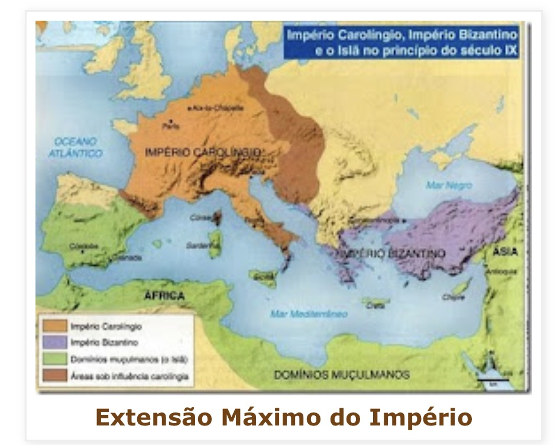
Depois da queda do Império Romano, a Europa ficou cheia de pequenos reinos, com muitas guerras e insegurança.
Mas, no meio dessa confusão, surgiu um novo império que tentou unir novamente os povos europeus: o Império Carolíngio.
Tudo começou com um povo chamado francos, que vivia onde hoje é a França e partes da Alemanha.
Um dos reis mais importantes desse povo foi Carlos Magno, cujo nome significa “Carlos, o Grande”.
E ele realmente foi grande: não só em poder, mas também na tentativa de organizar e proteger os territórios da Europa Ocidental.
Carlos Magno se tornou rei dos francos no ano de 768 e, ao longo de seu governo, conquistou muitos territórios, formando um enorme império.
Ele também tinha uma forte ligação com a Igreja Católica.
Em 800, no dia de Natal, o Papa coroou Carlos Magno como Imperador do Ocidente.
Isso significava que ele era visto como o novo protetor da cristandade e herdeiro da tradição do antigo Império Romano.
O Império Carolíngio ficou conhecido não só pelas guerras, mas também por tentar melhorar a educação e organizar o governo.
Carlos Magno mandou construir escolas nos mosteiros, incentivou a cópia de livros antigos e criou leis para organizar a vida das pessoas.
Esse período ficou conhecido como Renascimento Carolíngio, porque tentou recuperar parte do conhecimento e da cultura da Antiguidade.
Mas, após a morte de Carlos Magno, o império começou a enfraquecer.
Seus netos dividiram o território entre si no Tratado de Verdun (843), e o império foi se fragmentando aos poucos.
Dessa divisão surgiram reinos que mais tarde dariam origem a países como França e Alemanha.
Mesmo assim, o Império Carolíngio foi muito importante, pois marcou uma tentativa de unir a Europa cristã e manter vivas as ideias de cultura, governo e fé em uma época de muitas dificuldades.
A Igreja na Idade Média – A força espiritual e política de uma instituição poderosa
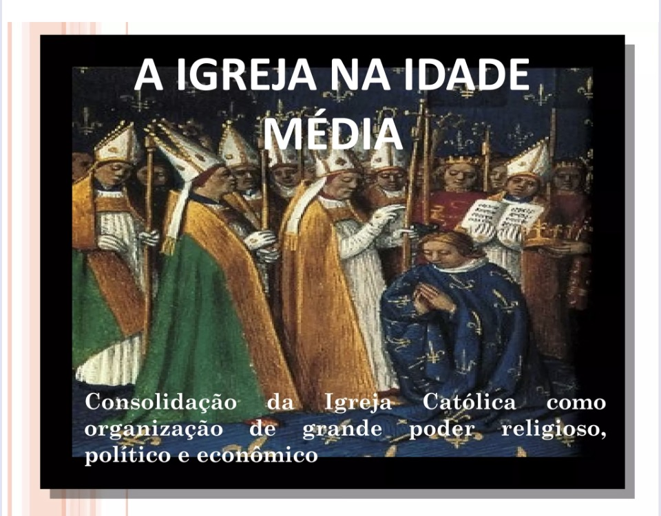
Imagine viver em uma época em que a maioria das pessoas não sabia ler nem escrever, em que as cidades eram pequenas e o medo das guerras e doenças era constante. Nessa época, chamada de Idade Média (entre os séculos V e XV), uma instituição era muito mais do que um lugar de oração: era o centro da vida das pessoas. Estamos falando da Igreja Católica.
A Igreja era muito poderosa, não só no lado espiritual, mas também no lado político e econômico. Ela dizia como as pessoas deviam se comportar, o que era certo ou errado e até quem poderia governar.
O líder máximo da Igreja era o Papa, que vivia em Roma e era visto como o representante de Deus na Terra.
Na Idade Média, praticamente toda a Europa era cristã. As pessoas iam à missa, faziam batismos, casamentos e acreditavam que, após a morte, seriam julgadas por Deus.
Por isso, seguir os ensinamentos da Igreja era considerado essencial para garantir a salvação da alma.
Mas a Igreja fazia muito mais do que pregar: ela controlava terras, cobrava impostos (como o dízimo) e influenciava decisões dos reis.
Muitos nobres doavam terras à Igreja para mostrar devoção ou garantir o perdão dos pecados.
Além disso, os mosteiros eram lugares muito importantes. Lá viviam os monges, que copiavam livros à mão, estudavam, oravam e ajudavam os pobres.
Foi dentro dos mosteiros que parte do conhecimento da Antiguidade foi preservado, como livros de medicina, filosofia e história.
A Igreja também participou de momentos importantes da Idade Média, como as Cruzadas, expedições militares organizadas para tentar “libertar” Jerusalém, que estava sob domínio muçulmano.
Com o tempo, a Igreja se tornou tão poderosa que começou a enfrentar críticas.
Algumas pessoas achavam que ela se preocupava mais com riquezas e poder do que com a fé verdadeira.
Essas críticas cresceriam muito mais tarde, mas isso é assunto para outra aula.
Durante toda a Idade Média, a Igreja foi como um farol em meio à escuridão: guiava, controlava, protegia e também mandava.
Para o bem ou para o mal, ela teve um papel central na vida medieval.
A Questão das Investiduras – A briga entre o Papa e o Imperador
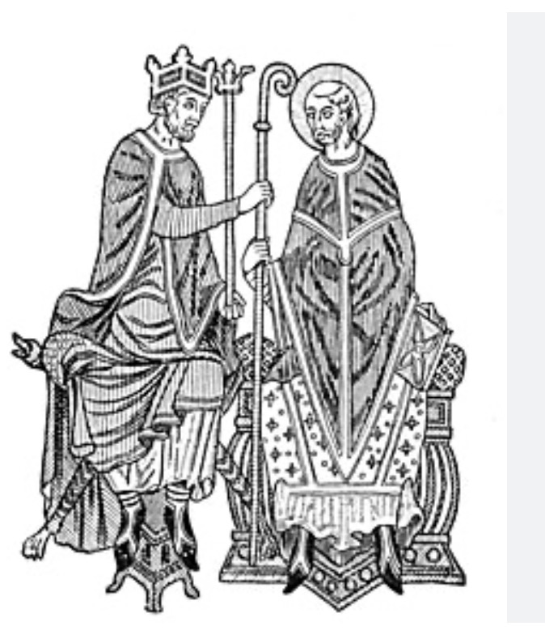
Durante a Idade Média, a Igreja Católica era muito poderosa. E os reis e imperadores também queriam mandar em tudo.
Mas o que acontece quando duas autoridades muito fortes querem controlar as mesmas coisas? Isso gera uma grande briga.
Foi exatamente isso que aconteceu na famosa Questão das Investiduras.
Mas o que significa investidura?
Naquela época, os bispos e padres não eram apenas líderes religiosos: eles também governavam terras e tinham muito poder político.
Escolher quem seriam esses líderes da Igreja era algo extremamente importante.
E aí surgiu a grande pergunta: quem tinha o direito de escolher os bispos? O Papa ou o imperador?
O Papa Gregório VII acreditava que somente a Igreja podia nomear os bispos.
Já o Imperador Henrique IV, do Sacro Império Romano-Germânico, dizia que ele também tinha esse direito, pois os bispos viviam em suas terras e ajudavam a governar.
E então começou a grande confusão.
O Papa excomungou (ou seja, expulsou da Igreja) o imperador.
Isso era algo muito sério, pois significava que Henrique IV estava fora da Igreja e, teoricamente, fora da salvação.
Com medo de perder o trono, o imperador foi até onde o Papa estava e pediu perdão de joelhos na neve, no famoso episódio do Castelo de Canossa, em 1077.
Mas a briga continuou por muitos anos.
No final, foi feito um acordo chamado Concordata de Worms, em 1122.
A Igreja continuaria escolhendo os bispos, mas o imperador ainda teria alguma influência.
A Questão das Investiduras mostrou como, na Idade Média, Igreja e governo estavam profundamente misturados.
E também revelou como era difícil separar o poder religioso do poder político.
A vida no Feudalismo – Castelos, senhores e camponeses
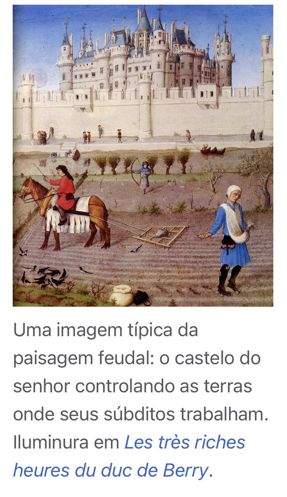
Imagine viver em uma época sem grandes cidades, sem internet, sem bancos e sem shopping. Onde as pessoas moravam no campo, cultivavam o que comiam e obedeciam a um senhor poderoso que morava em um castelo.
Bem-vindo ao mundo do Feudalismo, que aconteceu durante a Idade Média, principalmente entre os séculos IX e XIII.
Tudo começou depois da queda do Império Romano, quando a Europa ficou cheia de invasões e insegurança. As pessoas fugiram das cidades e passaram a viver no campo, em busca de proteção.
Assim surgiram os feudos: grandes pedaços de terra controlados por um senhor feudal, que podia ser um nobre ou até mesmo um bispo.
No centro do feudo havia um castelo, onde morava o senhor e sua família. Ao redor, viviam os camponeses, que cultivavam a terra.
Mas atenção: a terra não era deles. Eles trabalhavam em troca de proteção e moradia. Em tempos de guerra, corriam para dentro do castelo para se proteger.
A sociedade feudal era bem dividida. Podemos imaginá-la como uma pirâmide:
No topo estava o rei, que tinha pouco poder direto, pois dividia as terras entre os nobres.
Depois vinham os senhores feudais, donos dos feudos.
Abaixo estavam os cavaleiros, que protegiam os senhores em troca de terras ou favores.
Na base estavam os servos (camponeses), que trabalhavam muito e pagavam vários impostos.
Tudo era baseado em laços de fidelidade e obrigações. O senhor protegia e o servo produzia.
Era uma troca, mas nem sempre justa, pois os servos tinham uma vida muito difícil.
Além disso, a Igreja Católica tinha um papel muito importante. Os mosteiros e bispos também tinham terras e influenciavam a vida de todos.
A religião era o centro da cultura e do conhecimento.
No feudalismo, quase tudo era produzido dentro do próprio feudo: comida, roupas e ferramentas. Quase não existia comércio.
Era um sistema rural, fechado e baseado na terra.
Com o tempo, o comércio voltou a crescer, surgiram cidades e novas ideias.
A vida começou a mudar... e o feudalismo começou a desaparecer.
O Mundo Árabe – Uma história de fé, cultura e conhecimento
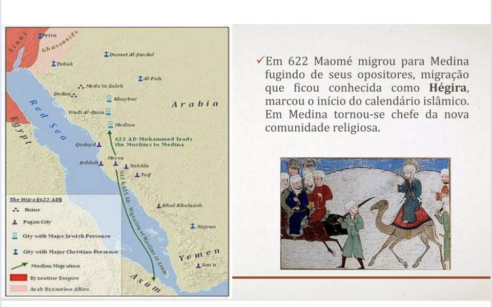
Há muitos séculos, em meio ao deserto quente e dourado da Península Arábica, surgiu uma cultura cheia de histórias, saberes e tradições: o Mundo Árabe.
Tudo começou com os árabes, um povo que vivia principalmente no deserto, em tribos nômades.
Eles criavam camelos, comerciavam perfumes, tecidos e especiarias, e viajavam por grandes rotas no meio da areia.
No centro dessa região ficava a cidade de Meca, um importante local de comércio e religião.
Foi lá que, no século VII, nasceu um homem chamado Maomé.
Ele era um comerciante respeitado que, aos 40 anos, passou a receber mensagens que, segundo ele, vinham de Alá (Deus).
Essas mensagens deram origem ao Islamismo, uma nova religião. Os seguidores de Maomé são chamados de muçulmanos.
Maomé ensinava que havia um único Deus e que todas as pessoas deviam viver com justiça, caridade e fé.
Depois de enfrentar resistência em Meca, ele foi para outra cidade: Medina.
Essa viagem ficou conhecida como Hégira e marca o início do calendário islâmico.
Com o tempo, o Islã se espalhou por muitas regiões: do norte da África até partes da Ásia e da Europa.
O mundo árabe se tornou um enorme império, cheio de cidades ricas, como Bagdá, Cairo e Córdoba.
Mas o Mundo Árabe não foi importante apenas pela religião.
Os árabes foram grandes cientistas, médicos, matemáticos, astrônomos e filósofos.
Foram eles que trouxeram os números que usamos hoje, estudaram o céu com instrumentos avançados e copiaram muitos livros da Grécia Antiga, ajudando a preservar esse conhecimento.
Eles também deixaram contribuições incríveis na arquitetura, com belas mesquitas, arcos e mosaicos coloridos.
E também na literatura, com histórias famosas como As Mil e Uma Noites, cheias de aventuras, gênios e tapetes voadores.
Até hoje, o Mundo Árabe influencia nossa cultura, nossa ciência e até nosso vocabulário.
O Império Bizantino – O império que unia o passado romano com a fé cristã
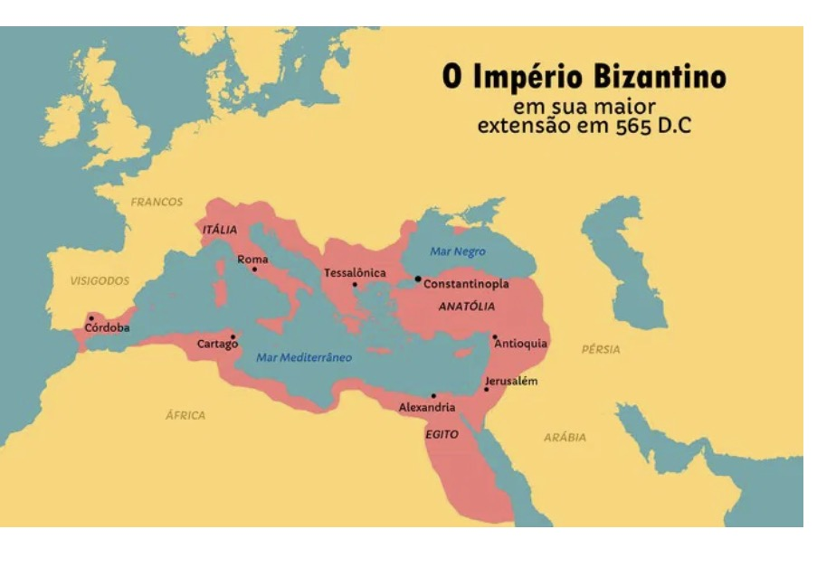
Você sabia que o Império Romano não acabou de uma vez? Quando a parte ocidental caiu, no século V, a parte oriental continuou viva e forte por muitos séculos.
Essa parte ficou conhecida como Império Bizantino, uma civilização cheia de riqueza, cultura e fé.
Tudo começou quando o imperador romano Constantino fundou uma nova capital chamada Constantinopla, no ano 330.
Hoje essa cidade é conhecida como Istambul, na Turquia. Ela ficava em um ponto estratégico entre a Europa e a Ásia, próxima ao Mar Mediterrâneo.
A cidade era cercada por muralhas, mercados, igrejas e palácios. Era tão rica e movimentada que foi chamada de “Nova Roma”.
O Império Bizantino falava grego, não latim, e misturava a cultura romana, grega e cristã.
Ele durou por mais de mil anos, até 1453, quando Constantinopla foi conquistada pelos turcos otomanos.
Um dos maiores imperadores bizantinos foi Justiniano, que governou no século VI.
Ele tentou recuperar os antigos territórios do Império Romano e quase conseguiu.
Também ficou famoso por mandar construir a belíssima igreja de Santa Sofia e por criar um importante conjunto de leis, conhecido como Código de Justiniano.
A religião era o centro da vida no império. O cristianismo era a fé oficial, mas com o tempo surgiram diferenças entre a Igreja do Ocidente (Roma) e a do Oriente (Constantinopla).
Essas diferenças levaram à divisão da Igreja em 1054, no evento conhecido como Cisma do Oriente.
A Igreja do Ocidente ficou conhecida como Igreja Católica, enquanto a do Oriente passou a ser chamada de Igreja Ortodoxa.
Mesmo enfrentando guerras e crises, o Império Bizantino foi um importante guardião da cultura antiga.
Ele preservou textos da Grécia e de Roma, desenvolveu belas obras de arte e influenciou várias culturas.
Quando Constantinopla caiu em 1453, muitos estudiosos fugiram para a Europa Ocidental, levando conhecimentos que ajudaram a dar início ao Renascimento.
O Império Bizantino pode ter desaparecido, mas deixou um legado que atravessou os séculos: uma ponte entre o mundo antigo e o mundo moderno.
A Baixa Idade Média – Um tempo de mudanças e renascimentos
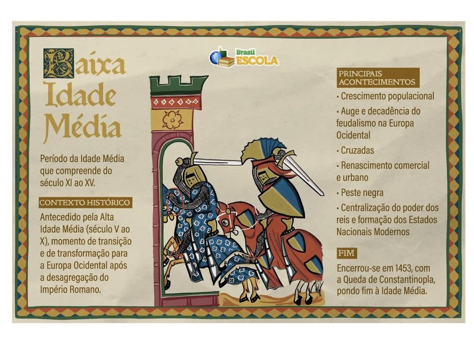
Durante muitos séculos, a vida na Europa medieval foi marcada por castelos, feudos e muita fé.
Mas, a partir do século XI, as coisas começaram a mudar.
Essa nova fase é chamada de Baixa Idade Média e durou até o século XV. Foi um período de transformações, crescimento e desafios.
Com mais segurança, os campos passaram a produzir mais alimentos, e a população cresceu.
As pessoas começaram a sair dos feudos e formar novas cidades, com mercados, feiras e artesãos.
Surgiu o renascimento da vida urbana e do comércio.
Os burgos (pequenas cidades) cresceram, e com eles surgiu a burguesia, formada por comerciantes e artesãos.
Essa nova classe social queria liberdade e mais oportunidades.
Ao mesmo tempo, a Igreja Católica continuava muito poderosa.
Foi nessa época que aconteceram as Cruzadas, expedições militares que buscavam conquistar Jerusalém.
Essas expedições ajudaram a aproximar o Oriente e o Ocidente, trazendo novos produtos, ideias e conhecimentos.
Mas nem tudo foi positivo.
No século XIV, a Europa enfrentou uma grande tragédia: a Peste Negra, que matou milhões de pessoas.
As cidades ficaram vazias, os campos abandonados, e o medo tomou conta da população.
Mesmo com crises, esse período também trouxe mudanças importantes.
Surgiram as primeiras universidades, os livros começaram a circular e o conhecimento voltou a ser valorizado.
A Baixa Idade Média marcou o fim do feudalismo e o início de um novo tempo, que levaria à Idade Moderna.
As Cruzadas – A guerra pela Terra Santa
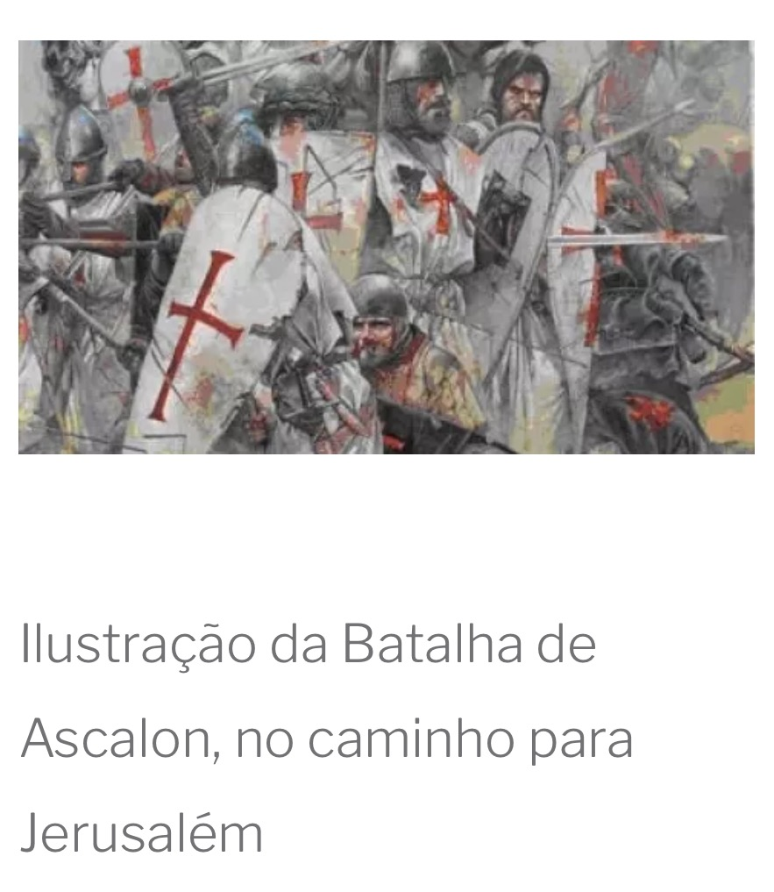
Durante a Idade Média, a religião dominava a vida das pessoas. A maior parte dos europeus era cristã e acreditava que Jerusalém, a cidade onde Jesus viveu, morreu e ressuscitou, era o lugar mais sagrado do mundo.
Mas havia um problema: Jerusalém estava sob o domínio dos muçulmanos, que também consideravam a cidade sagrada.
Foi então que começaram as Cruzadas — uma série de expedições militares organizadas pelos cristãos da Europa entre os séculos XI e XIII, com o objetivo de reconquistar a Terra Santa.
Tudo começou em 1096, quando o Papa Urbano II fez um famoso discurso pedindo que os cristãos lutassem pela fé. Ele prometeu perdão dos pecados a quem participasse.
Essa mensagem empolgou muita gente — nobres, cavaleiros, camponeses e até crianças — todos marcharam com uma cruz costurada nas roupas, por isso foram chamados de cruzados.
As Cruzadas foram longas, perigosas e cheias de contradições.
Houve vitórias, como a conquista de Jerusalém em 1099, e derrotas, como quando o grande líder muçulmano Saladino recuperou a cidade em 1187.
No total, aconteceram oito Cruzadas principais, além de outras menores.
Com o passar do tempo, os motivos religiosos começaram a se misturar com interesses políticos e econômicos. Muitos reis e nobres viram nas Cruzadas uma oportunidade de conquistar terras, riquezas e prestígio.
Mesmo sem atingirem todos os seus objetivos, as Cruzadas mudaram profundamente a Europa.
Elas aproximaram o Oriente e o Ocidente, ampliaram o comércio e trouxeram para a Europa novos produtos, como especiarias, tecidos finos, perfumes e instrumentos científicos.
Além disso, os europeus tiveram contato com novos conhecimentos em medicina, matemática, astronomia e arquitetura, que mais tarde ajudariam no Renascimento.
Por outro lado, as Cruzadas também deixaram marcas de violência, intolerância e destruição, mostrando como a mistura de fé e poder pode gerar grandes conflitos.
Em resumo:
As Cruzadas foram muito mais do que guerras religiosas. Foram encontros
e choques entre culturas, que mudaram a economia, o pensamento e as
relações entre Oriente e Ocidente — deixando um legado que transformou a
história da Europa e do mundo.
O Renascimento Comercial e Urbano – Quando as cidades voltaram a viver
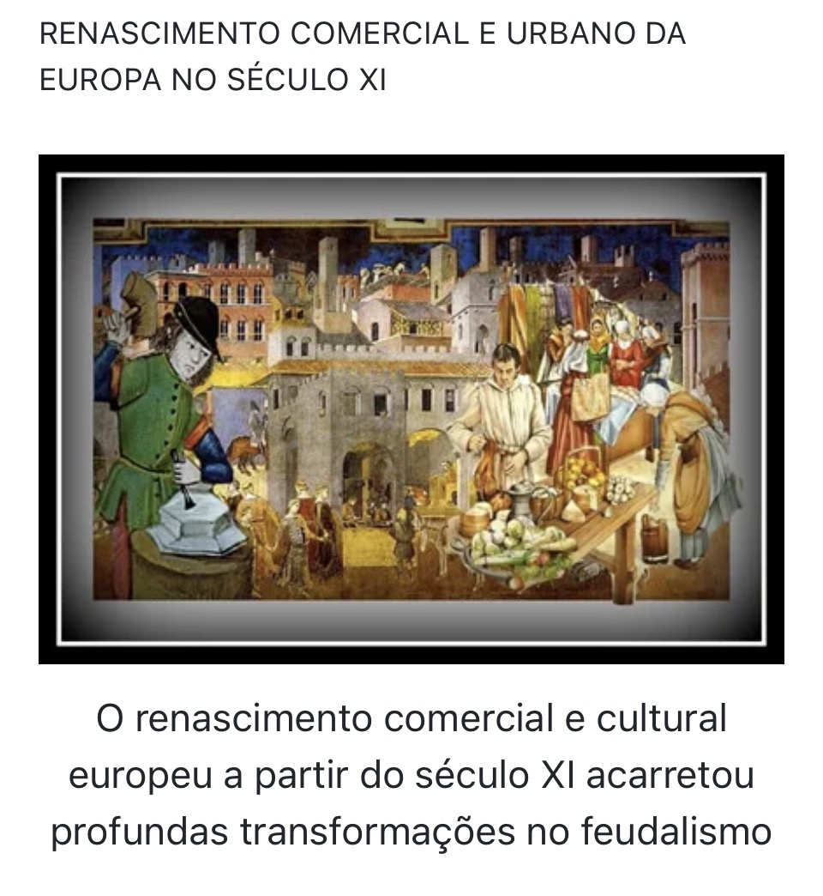
Durante a Alta Idade Média (séculos V ao X), a vida na Europa era quase toda no campo. As pessoas viviam em feudos, cultivando a terra e produzindo apenas o necessário para sobreviver.
O comércio era fraco, as moedas quase não circulavam e as cidades estavam vazias. Mas, a partir do século XI, tudo começou a mudar!
Graças a um período de maior segurança e estabilidade, as colheitas melhoraram, surgiram novas técnicas agrícolas (como o arado de ferro e a rotação de culturas), e a população aumentou.
Com isso, as pessoas começaram a produzir mais do que precisavam — esse “extra” era o excedente, e ele podia ser trocado ou vendido.
E foi assim que o comércio renasceu!
As feiras medievais surgiram como grandes pontos de encontro entre camponeses, artesãos e comerciantes.
Ali, trocavam-se tecidos, vinhos, grãos, metais, especiarias e joias vindas até do Oriente.
Essas feiras ficavam em lugares estratégicos, próximas de rotas comerciais e rios — como as famosas feiras de Champagne, na França.
Com o comércio crescendo, as rotas comerciais voltaram a funcionar e as moedas voltaram a circular.
Muitos comerciantes começaram a se estabelecer em locais fixos para vender seus produtos — e assim, as cidades voltaram a nascer!
Essas novas cidades eram chamadas de burgos, e nelas surgiu uma nova classe social: a burguesia.
Os burgueses eram comerciantes, banqueiros e artesãos que não viviam mais da terra, mas dos negócios e das trocas.
Eles queriam liberdade e autonomia — por isso, começaram a lutar contra o poder dos senhores feudais e conquistaram o direito de governar as cidades por meio de conselhos locais.
As cidades se tornaram lugares vivos e cheios de movimento:
• Ruas estreitas e agitadas;
• Mercados barulhentos;
• Oficinas cheias de trabalhadores;
• Igrejas e praças que reuniam o povo;
• E, com o tempo, as primeiras universidades começaram a surgir, onde se
estudava filosofia, medicina, direito e teologia.
Tudo isso marcou o fim do isolamento feudal e o renascimento da vida urbana e comercial.
O campo continuava importante, mas agora as cidades eram o centro das novidades, do dinheiro e do conhecimento.
Esse Renascimento Comercial e Urbano foi essencial para o nascimento de um novo mundo: ele enfraqueceu o feudalismo, fortaleceu o poder da burguesia e preparou o caminho para a Idade Moderna, onde o comércio, o dinheiro e as ideias de progresso ganhariam cada vez mais força.
Em resumo:
O Renascimento Comercial e Urbano foi o momento em que as cidades
voltaram a pulsar, o comércio floresceu e uma nova sociedade começou a
nascer — uma sociedade mais dinâmica, curiosa e pronta para mudar o
mundo.
A Crise do Século XIV – Quando a Europa tremeu
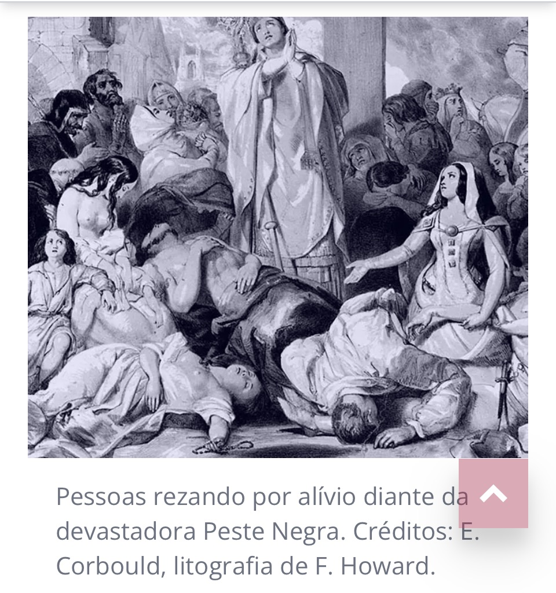
Imagine viver em um tempo em que tudo começa a dar errado ao mesmo tempo: as colheitas não dão certo, guerras se espalham e uma doença misteriosa mata milhões de pessoas.
Foi exatamente isso que aconteceu na Europa do século XIV, um período tão difícil que ficou conhecido como a grande crise da Idade Média.
Essa crise foi resultado de três grandes tragédias que abalaram profundamente a vida dos europeus: a fome, a Peste Negra e as guerras.
1. A fome
No início do século XIV, o clima da Europa mudou.
O tempo ficou mais frio e chuvoso, o que atrapalhou as plantações.
Os campos encharcaram, o solo perdeu força e as colheitas foram péssimas.
Com pouca comida, os estoques acabaram rapidamente e as pessoas começaram a passar fome.
Muitos morreram de desnutrição e doenças.
Além disso, a fome deixou o povo fraco e vulnerável, o que facilitaria a chegada de outras tragédias…
2. A Peste Negra
A pior de todas as desgraças foi a chegada de uma doença terrível: a Peste Negra. Ela veio em navios vindos da Ásia, trazida por ratos e pulgas infectadas, e espalhou-se rapidamente pelas cidades europeias.
Os sintomas eram assustadores: febre alta, manchas escuras pelo corpo e feridas dolorosas.
Em pouco tempo, milhões de pessoas morreram — em algumas regiões, metade da população desapareceu.
As pessoas não sabiam o que estava acontecendo.
Sem explicações médicas, muitos acreditavam que era um castigo de Deus pelos pecados da humanidade.
As ruas ficaram desertas, e o medo dominou toda a Europa.
3. As guerras
Como se não bastasse, a Europa ainda enfrentava conflitos violentos.
O principal deles foi a Guerra dos Cem Anos, entre França e Inglaterra, que durou de 1337 a 1453.
Apesar do nome, foram mais de cem anos de batalhas, destruição e sofrimento.
As cidades eram saqueadas, os campos destruídos, e o povo pagava caro pelos custos da guerra.
A violência e o caos pareciam não ter fim.
As consequências da crise
Com tanta morte e destruição, o sistema feudal começou a ruir.
A falta de trabalhadores nos campos fez os senhores feudais perderem poder e riqueza.
Já os camponeses sobreviventes passaram a exigir melhores condições de vida e maior liberdade.
Surgiram revoltas populares, especialmente na França e na Inglaterra, mostrando que o povo estava cansado da opressão.
O começo de um novo tempo
Mesmo sendo um período de dor e tragédias, a Crise do Século XIV teve um efeito importante: ela enfraqueceu o feudalismo e abriu espaço para mudanças profundas na Europa.
As pessoas começaram a buscar novas ideias, novas formas de viver e novos conhecimentos.
Foi o início do fim da Idade Média e o caminho para o Renascimento, um tempo de renovação da arte, da ciência, do comércio e das cidades.
Em resumo:
A Crise do Século XIV foi um dos momentos mais difíceis da história
europeia, mas também marcou o fim de um mundo velho e o nascimento de um
mundo novo — um mundo que caminhava para a Idade Moderna.
Prof. Marcelo Oliveira
História Geral – O século em que a Europa viveu sua pior crise e começou
a renascer.
A Reforma Luterana – Quando Lutero mudou a Igreja
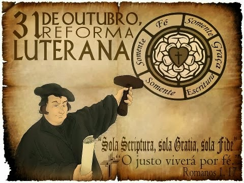
No século XVI, a Igreja Católica tinha muito poder, mas também muitos problemas. Muitas pessoas estavam insatisfeitas, principalmente por causa da venda de indulgências — uma espécie de “perdão” que era vendido para quem quisesse.
Foi então que um monge alemão chamado Martinho Lutero decidiu fazer algo diferente.
Em 1517, ele escreveu as famosas 95 Teses, que eram críticas à Igreja, principalmente contra a venda dessas indulgências.
Ele pregou essas teses na porta da igreja em Wittenberg, na Alemanha, e suas ideias começaram a se espalhar rapidamente.
Lutero dizia que a salvação (ser perdoado dos pecados) não dependia do dinheiro, mas da fé verdadeira em Deus e da leitura da Bíblia.
Ele também defendia que a Bíblia deveria estar em uma língua que as pessoas comuns entendessem, e não somente em latim, como era na Igreja.
As ideias de Lutero fizeram muita gente pensar e questionar a Igreja.
Isso provocou uma grande mudança chamada Reforma Protestante, que deu origem a várias novas igrejas, diferentes da Igreja Católica.
Mas a Igreja não gostou dessas críticas e tentou punir Lutero.
Mesmo assim, ele continuou firme, protegido por alguns reis que também queriam enfraquecer o poder da Igreja.
A Reforma Luterana marcou o começo de uma grande transformação na Europa, que trouxe mais liberdade religiosa e mudou a forma como as pessoas praticavam a fé.
Prof. Marcelo Oliveira
História Geral
A Reforma Calvinista – Quando a fé ganhou disciplina
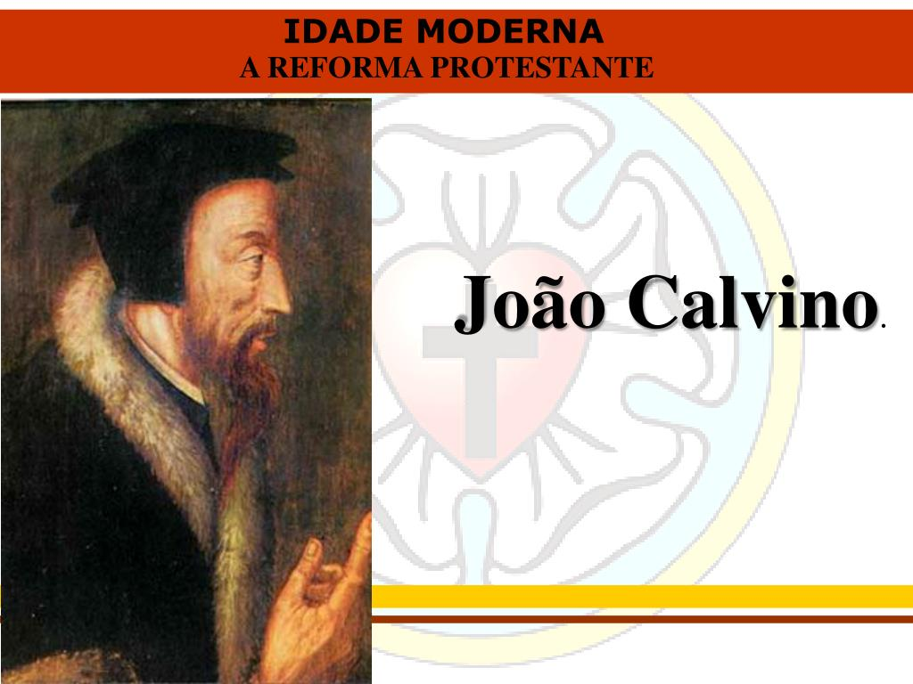
Depois que Martinho Lutero iniciou a Reforma Protestante na Alemanha, outros líderes religiosos também começaram a propor mudanças na forma de viver a fé cristã.
Um desses líderes foi João Calvino, que viveu na Suíça e criou o que chamamos de Reforma Calvinista.
Calvino era um homem muito estudioso e acreditava que Deus já sabia tudo o que ia acontecer com cada pessoa, inclusive quem seria salvo ou não.
Essa ideia ficou conhecida como predestinação.
Ou seja, para Calvino, as pessoas não conquistavam a salvação por obras ou por dinheiro, mas porque Deus já havia escolhido quem seria salvo.
Mas Calvino também acreditava que quem fosse escolhido por Deus deveria viver de forma correta, honesta, disciplinada e dedicada ao trabalho.
Por isso, em Genebra, cidade onde ele viveu, as regras eram bem rígidas: nada de festas exageradas, roupas muito luxuosas ou preguiça.
A Reforma Calvinista atraiu muitos seguidores, principalmente burgueses, comerciantes e trabalhadores que gostavam da ideia de que o trabalho honesto e o lucro justo eram sinais de uma vida abençoada por Deus.
As ideias de Calvino se espalharam por vários países:
• Na França, seus seguidores ficaram conhecidos como huguenotes;
• Na Escócia, surgiram os presbiterianos;
• Na Inglaterra, influenciaram muito os puritanos.
A Reforma Calvinista foi mais um passo importante no movimento protestante.
Assim como Lutero, Calvino ajudou a transformar a religião na Europa, criando novas formas de fé e de organização religiosa.
Prof. Marcelo Oliveira
História Geral
A Reforma Anglicana – Quando um rei criou sua própria Igreja
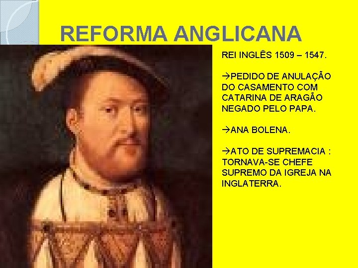
Enquanto Lutero mudava a religião na Alemanha e Calvino organizava uma nova fé na Suíça, uma outra Reforma religiosa acontecia na Inglaterra — e ela começou de um jeito bem diferente.
O rei da Inglaterra, Henrique VIII, queria se separar de sua esposa, Catarina de Aragão, porque ela não conseguia ter um filho homem que pudesse ser o próximo rei.
Mas havia um problema: a Igreja Católica não permitia o divórcio.
Então, Henrique pediu ao Papa a anulação do casamento, e o Papa disse não.
Foi aí que Henrique tomou uma decisão radical: rompeu com a Igreja Católica e criou sua própria igreja, a Igreja Anglicana, em 1534.
Ele se tornou o chefe da nova igreja e passou a ter o poder religioso e político ao mesmo tempo.
Essa mudança ficou conhecida como Reforma Anglicana.
Além da questão do divórcio, havia outros interesses:
• O rei queria controlar as terras e os bens da Igreja Católica na
Inglaterra;
• Queria aumentar o poder da monarquia;
• E também agradar a parte da população que já estava influenciada pelas
ideias protestantes.
Com o tempo, a Igreja Anglicana misturou elementos católicos e protestantes.
Por exemplo: manteve algumas tradições e cerimônias da Igreja Católica, mas adotou a Bíblia em inglês, permitiu o casamento dos padres e rejeitou a autoridade do Papa.
Depois de Henrique VIII, seus filhos continuaram a Reforma.
Sua filha, rainha Elizabeth I, foi quem fortaleceu de vez o anglicanismo e ajudou a transformar a Inglaterra em um reino protestante.
A Reforma Anglicana mostrou que, além da fé, as Reformas também envolviam política, poder e interesses econômicos.
E, com ela, a Inglaterra passou a seguir um caminho religioso próprio, diferente do resto da Europa.
Prof. Marcelo Oliveira
História Geral
A Reação Católica – Quando a Igreja decidiu mudar (e resistir)
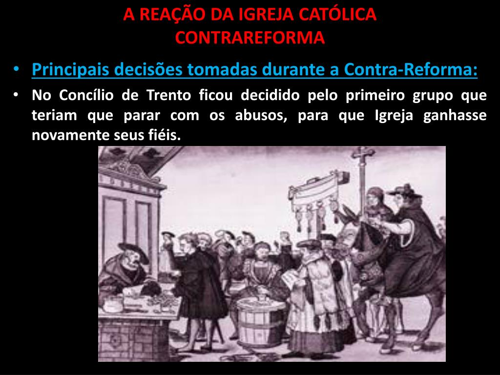
Depois que Martinho Lutero, João Calvino e outros líderes religiosos iniciaram as Reformas Protestantes, a Igreja Católica começou a perder fiéis em várias partes da Europa.
Muitas pessoas estavam mudando de religião, e a autoridade do Papa estava sendo questionada.
Foi então que a Igreja resolveu reagir.
Esse movimento ficou conhecido como Reação Católica ou Contrarreforma.
A ideia era responder às críticas dos reformadores, corrigir erros dentro da própria Igreja e impedir que mais pessoas deixassem o catolicismo.
A Reação Católica teve várias ações importantes:
Concílio de Trento (1545–1563):
Foi uma grande reunião de bispos e líderes da Igreja para discutir os problemas e organizar mudanças.
A Igreja decidiu manter suas crenças, como a importância das boas obras e a autoridade do Papa, mas também acabou com abusos, como a venda de indulgências, e passou a exigir mais preparo dos padres.
Criação da Companhia de Jesus:
A Igreja criou a Ordem dos Jesuítas, liderada por Inácio de Loyola.
Os jesuítas eram religiosos bem preparados que viajavam pelo mundo para ensinar, converter e defender a fé católica.
Eles fundaram escolas e missões em vários continentes.
Tribunal da Inquisição:
A Igreja também fortaleceu a Inquisição, um tribunal que julgava e punia pessoas acusadas de heresia (ou seja, de ir contra as ideias da Igreja).
Muitas vezes, esse tribunal era severo e usava tortura e punições.
Índice de Livros Proibidos:
A Igreja fez uma lista de livros que os católicos não podiam ler, pois considerava que essas obras iam contra a fé.
O objetivo era controlar as ideias que circulavam na sociedade.
A Reação Católica teve grande impacto: fortaleceu a Igreja em algumas regiões, especialmente no sul da Europa (como Espanha, Itália e Portugal), e dividiu a Europa entre países católicos e protestantes.
Foi um momento de mudança, disputa e transformação religiosa que ajudou a moldar o mundo moderno.
Prof. Marcelo Oliveira
História Geral
O Mercantilismo – A corrida pelo ouro e pelo poder
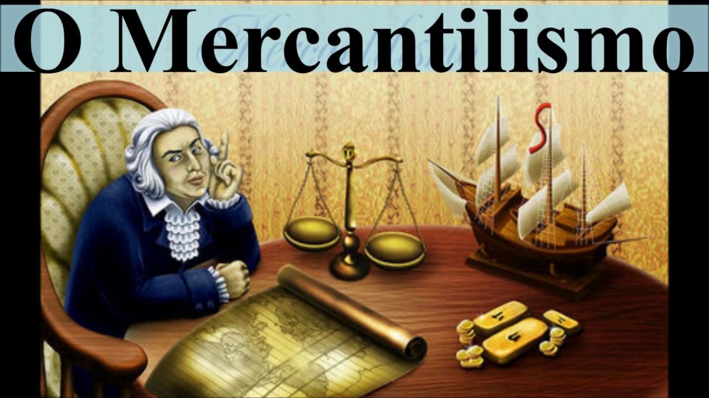
Depois das Grandes Navegações, o mundo começou a mudar muito rápido. Os reis europeus descobriram novas terras, abriram rotas comerciais e passaram a controlar colônias cheias de riquezas. Foi nesse cenário que nasceu um conjunto de práticas econômicas chamado Mercantilismo.
Mas o que era o Mercantilismo?
O Mercantilismo foi o jeito que os reis usaram para enriquecer e fortalecer seus países entre os séculos XV e XVIII. Ele tinha uma ideia principal: um país rico é aquele que tem muito ouro e prata. Por isso, os governos começaram a fazer de tudo para acumular metais preciosos e controlar o comércio.
Várias estratégias foram usadas:
Metalismo:
Quanto mais ouro e prata um país tivesse guardado, mais poderoso ele
seria. Os reis queriam evitar que o dinheiro saísse do país.
Balança comercial favorável:
Os países procuravam vender mais produtos do que comprar. Assim,
ganhavam mais dinheiro com exportações e perdiam menos com importações.
Protecionismo:
Para proteger seus produtos, os países colocavam impostos nos produtos
estrangeiros, para que a população preferisse comprar os produtos
fabricados dentro do próprio reino.
Colonialismo:
As colônias tinham papel fundamental: forneciam matérias-primas (como
açúcar, ouro e algodão) e compravam produtos manufaturados da metrópole
(país colonizador). Isso garantia lucros para a Europa.
Monopólios comerciais:
Os reis davam o direito exclusivo a certas companhias ou grupos para
comercializar com determinadas regiões, garantindo controle total sobre
o comércio.
O Mercantilismo servia aos interesses das monarquias absolutistas, pois ajudava a centralizar o poder nas mãos dos reis e a financiar exércitos, obras e a própria corte real.
Essa política econômica ajudou a Europa a se tornar mais rica e poderosa, mas também foi a base da exploração das colônias, como o Brasil, que serviam para enriquecer as metrópoles.
Prof. Marcelo Oliveira
História Geral.
Protecionismo – Quando os reis protegiam suas riquezas

Imagine que você tem uma barraca de sucos na feira. Você faz suco de laranja com muito carinho, mas, de repente, chega alguém de fora vendendo suco importado, mais barato e com embalagem bonita. As pessoas param de comprar o seu suco. O que você faria?
Na época do Mercantilismo, entre os séculos XV e XVIII, os reis europeus pensavam exatamente assim. Para proteger os produtos do próprio país contra a concorrência dos produtos estrangeiros, eles criaram o que chamamos de Protecionismo.
O Protecionismo era uma estratégia econômica que tinha um objetivo: proteger e fortalecer a economia nacional. Isso era feito de algumas maneiras:
Cobrar altos impostos dos produtos importados:
Quando um produto vinha de fora, ficava bem mais caro por causa dos
impostos. Assim, as pessoas preferiam comprar os produtos fabricados no
próprio país, que eram mais baratos.
Evitar compras do exterior:
Os governos limitavam ou proibiam a entrada de certos produtos
estrangeiros, para que os comerciantes e artesãos locais vendessem mais.
Incentivar a produção interna:
Os reis apoiavam os produtores locais, oferecendo apoio e vantagens para
que eles produzissem mais e melhor.
Por que isso era importante? Porque, no Mercantilismo, acreditava-se que a riqueza de um país estava na quantidade de ouro e prata que ele possuía. E para ter mais ouro, o país precisava vender muito para fora (exportar) e comprar pouco de fora (importar). O Protecionismo ajudava a manter essa balança favorável.
Essa prática ajudou os reinos europeus a crescer economicamente, aumentar o poder dos reis e fortalecer a produção nacional. Era uma verdadeira “proteção econômica” contra o mundo externo!
Prof. Marcelo Oliveira
História Geral.
O Sistema Colonial – Quando as colônias trabalhavam para as metrópoles
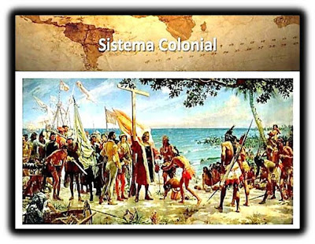
Imagine que uma pessoa rica monta uma fazenda bem longe de casa. Ela manda trabalhadores para plantar, colher e mandar tudo de volta para ela. Quem trabalha não fica com a produção: tudo vai para o dono. Algo parecido aconteceu com o que chamamos de Sistema Colonial Moderno, que se desenvolveu entre os séculos XV e XVIII.
Depois das Grandes Navegações, países como Portugal, Espanha, Inglaterra, França e Holanda começaram a conquistar terras em outras partes do mundo, como a América, a África e a Ásia. Nessas novas terras, eles criaram colônias — regiões dominadas e controladas por esses países europeus, chamados de metrópoles.
Mas por que eles fizeram isso?
O objetivo principal era explorar riquezas e enriquecer a metrópole. Por isso, nasceu o chamado Sistema Colonial, que funcionava com regras bem claras:
Exploração econômica:
As colônias existiam para produzir matérias-primas (como açúcar, ouro,
algodão e café) e mandar tudo para a metrópole.
Pacto Colonial:
As colônias só podiam fazer comércio com a metrópole. Ou seja, não
podiam vender nem comprar produtos de outros países.
Mão de obra explorada:
Nas colônias, os europeus usaram o trabalho forçado de indígenas e
africanos escravizados, principalmente nas lavouras e nas minas.
Controle político:
A metrópole mandava governadores, cobrava impostos e tomava todas as
decisões. As colônias não tinham liberdade.
O Sistema Colonial Moderno foi criado para servir ao Mercantilismo — o conjunto de práticas que buscava enriquecer os países europeus com metais preciosos e comércio vantajoso.
Esse sistema trouxe muitas riquezas para a Europa, mas também causou muita desigualdade, violência e exploração nas colônias. Foi uma parte importante da história moderna, que ajudou a formar o mundo como conhecemos hoje, com suas riquezas, desigualdades e culturas misturadas.
Prof. Marcelo Oliveira
História Geral.
Colonização e o Estado Moderno – Como os reis usaram as colônias para se fortalecer
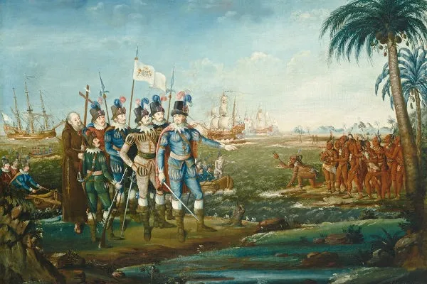
Durante a Idade Moderna, entre os séculos XV e XVIII, o mundo passou por grandes mudanças. Os reis europeus ficaram mais poderosos, criaram exércitos, cobraram impostos e passaram a mandar mais do que antes. Esse novo tipo de governo ficou conhecido como Estado Moderno.
Mas havia um problema: tudo isso custava caro. Para manter soldados, construir palácios, fazer guerras e organizar o país, os reis precisavam de muito dinheiro. Foi aí que a colonização ganhou um papel importante.
Quando os países europeus, como Portugal, Espanha, França e Inglaterra, conquistaram novas terras na América, África e Ásia, eles criaram as chamadas colônias. Essas colônias eram controladas pelas metrópoles (os países europeus) e serviam para fornecer riquezas, como ouro, açúcar, madeira, especiarias e outros produtos.
Essas riquezas eram levadas para a Europa e ajudavam os reis a manter o poder e fortalecer o Estado Moderno. Ou seja:
As colônias produziam, a metrópole lucrava.
Toda a produção das colônias era enviada para a Europa, ajudando a encher os cofres reais.
Com mais dinheiro, os reis controlavam melhor seus reinos.
Eles podiam pagar exércitos, construir navios, impor leis e cobrar impostos.
A colonização também ajudava a espalhar o poder político e religioso.
As metrópoles levavam sua cultura, sua religião e seu modo de vida para os povos colonizados.
Dessa forma, colonização e Estado Moderno andaram juntos. Enquanto os reis conquistavam e governavam, as colônias sustentavam esse poder com seu trabalho e suas riquezas.
Mas é importante lembrar que esse sistema também foi marcado por violência, escravidão e exploração, principalmente dos povos indígenas e africanos. A colonização trouxe benefícios para as metrópoles, mas causou sofrimento e desigualdade nas colônias.
Prof. Marcelo Oliveira
História Geral.
O “Exclusivo Metropolitano” – Quando as colônias só podiam obedecer
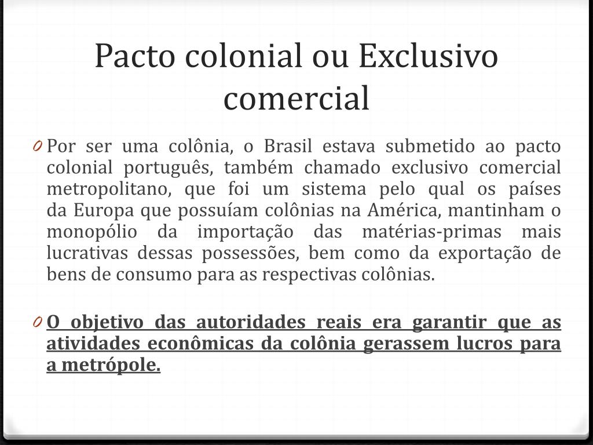
Durante os séculos XV a XVIII, os reis da Europa ficaram muito poderosos. Eles queriam seus países cada vez mais ricos e fortes. Para isso, criaram colônias em várias partes do mundo, como na América, na África e na Ásia. Essas colônias serviam para fornecer riquezas para a metrópole — ou seja, o país europeu que mandava nelas.
Mas a metrópole não queria que a colônia tivesse liberdade. Foi por isso que surgiu uma regra muito importante no Sistema Colonial: o Exclusivo Metropolitano.
Mas o que era isso?
O Exclusivo Metropolitano era uma lei econômica que dizia que a colônia só podia fazer comércio com a metrópole. Ou seja, era proibido vender ou comprar produtos de outros países. Toda produção da colônia tinha que ir para a metrópole, e tudo que ela precisava tinha que vir da metrópole também.
Vamos ver como isso funcionava:
A colônia produzia matérias-primas, como ouro, açúcar, tabaco ou algodão, e enviava tudo para a metrópole.
A metrópole transformava essas matérias-primas em produtos industrializados, como tecidos, ferramentas ou armas, e vendia de volta para a colônia, com lucro alto.
A colônia não podia produzir seus próprios produtos manufaturados nem comprar de outros países, mesmo que fosse mais barato.
Esse sistema garantia que a metrópole ficasse rica e poderosa, enquanto a colônia ficava dependente e sem liberdade econômica. O Exclusivo Metropolitano foi uma das formas que as metrópoles usaram para manter o controle total sobre suas colônias.
Mas com o tempo, essa exploração causou muita insatisfação. Muitos colonos queriam liberdade para negociar com outros países e melhorar de vida. Essa vontade de liberdade, mais tarde, ajudaria a causar revoltas e lutas por independência.
Prof. Marcelo Oliveira
História Geral.
As Revoluções Inglesas – A luta pelo poder e pela liberdade
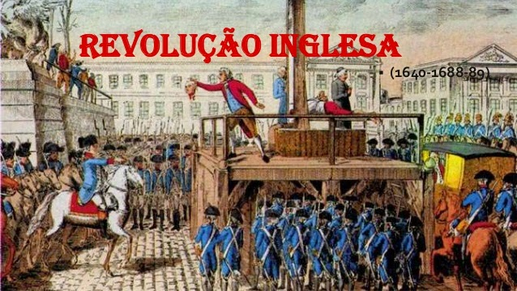
No século XVII, a Inglaterra passou por um período de muitas mudanças e conflitos chamados de Revoluções Inglesas. Nessa época, o rei e o Parlamento (grupo de representantes do povo) começaram a brigar pelo poder.
Os reis queriam governar sozinhos, com poder absoluto, mas o Parlamento queria participar das decisões e defender os direitos das pessoas. Isso gerou muitas disputas e até guerras.
As principais revoluções foram:
A Guerra Civil Inglesa:
Entre o rei Carlos I e o Parlamento, terminou com a execução do rei e o governo de Oliver Cromwell, que se tornou um líder muito forte.
A Revolução Gloriosa:
Quando o rei Jaime II foi derrubado, e o Parlamento colocou no poder os reis Guilherme e Maria, que aceitaram limitar o poder real e garantir mais direitos para o povo.
Essas revoluções foram importantes porque mostraram que o poder do rei não era absoluto e que o Parlamento e os direitos dos cidadãos precisavam ser respeitados. Foi um passo importante para a democracia.
A Guerra Civil Inglesa e a Revolução Gloriosa – O rei contra o Parlamento
No século XVII, o rei Carlos I da Inglaterra acreditava que tinha o direito de governar com poder total, sem ouvir o Parlamento. Mas muitos nobres e representantes não concordavam. Eles queriam participar das decisões do país.
Essa disputa virou uma guerra civil entre os Realistas (que apoiavam o rei) e os Parlamentares (que queriam limitar o poder do rei). Depois de anos de luta, o rei foi preso e executado.
O país ficou governado por Oliver Cromwell, que criou uma espécie de ditadura.
Mas depois da morte de Cromwell, a monarquia voltou. Só que o rei Jaime II tentou ser poderoso demais de novo, o que deixou o Parlamento preocupado.
Então, em 1688, aconteceu a Revolução Gloriosa: o Parlamento convidou o príncipe Guilherme da Holanda e sua esposa Maria para governar, mas eles aceitaram que o poder deles seria limitado e que o Parlamento teria mais força.
Com isso, a Inglaterra entrou numa nova fase, onde o rei não podia mais mandar sozinho, e as leis e os direitos do povo começaram a ser respeitados. Foi um passo importante para a construção da democracia.
Prof. Marcelo Oliveira
História Geral.
A Inglaterra no início do século XVII – Entre reis, parlamento e mudanças
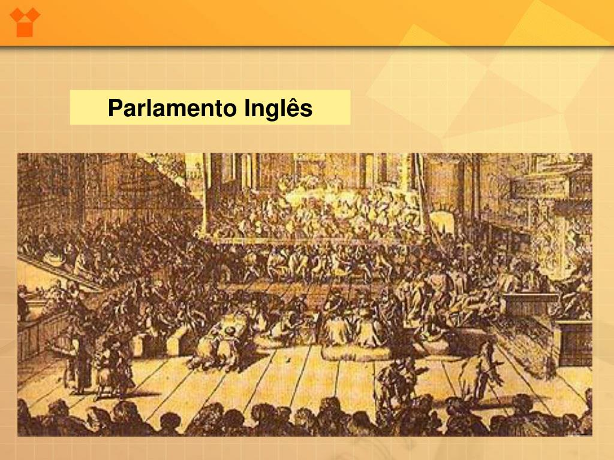
No início do século XVII, a Inglaterra era um país cheio de desafios e transformações. O rei da Inglaterra era Jaime I, que acreditava que seu poder vinha diretamente de Deus. Por isso, ele pensava que podia governar sozinho, sem precisar ouvir o Parlamento, que era o grupo de representantes do povo.
Mas o Parlamento não concordava. Os parlamentares queriam mais participação nas decisões do reino, principalmente para controlar os impostos e as leis. Isso começou a gerar muitos conflitos entre o rei e o Parlamento.
Além das disputas políticas, a Inglaterra também passava por mudanças na economia e na sociedade. Muitas pessoas deixavam o campo para morar nas cidades, onde novas indústrias e comércios estavam crescendo. O país também investia em navegações para explorar novas terras e expandir seus territórios pelo mundo.
Outro ponto importante era a religião. A Inglaterra era protestante, mas havia diferentes grupos religiosos que tinham ideias variadas sobre como a igreja deveria funcionar. Isso também causava tensões dentro do país.
Esse cenário de disputas políticas, econômicas e religiosas marcou o começo do século XVII na Inglaterra e preparou o caminho para os grandes acontecimentos que viriam depois, como as Revoluções Inglesas.
Prof. Marcelo Oliveira
História Geral.
A Dinastia Stuart – Reis, conflitos e mudanças na Inglaterra

No século XVII, a Inglaterra foi governada por uma família chamada Stuart. Eles começaram a reinar em 1603, quando Jaime I subiu ao trono, unindo as coroas da Inglaterra e da Escócia.
Os reis Stuart acreditavam no direito divino dos reis — a ideia de que o poder deles vinha diretamente de Deus e que ninguém podia questionar suas decisões. Isso causou muitos problemas, porque o Parlamento e o povo queriam ter mais voz nas decisões do país.
Durante o governo dos Stuart, aconteceram várias tensões políticas e religiosas. Por exemplo:
Jaime I e seu filho, Carlos I, enfrentaram o Parlamento, que queria limitar o poder do rei e controlar os impostos.
Essas disputas levaram à Guerra Civil Inglesa, um conflito entre os apoiadores do rei (realistas) e os defensores do Parlamento (parlamentares).
Carlos I foi derrotado, preso e executado, e o país ficou sob o comando de Oliver Cromwell, que não era da família Stuart.
Mas, em 1660, os Stuart voltaram ao poder com a Restauração da Monarquia, quando Carlos II subiu ao trono. No entanto, as tensões continuaram, principalmente sobre religião e o papel do Parlamento.
O último Stuart no trono inglês foi Jaime II, que tentou governar com muito poder, mas foi derrubado na Revolução Gloriosa de 1688. Depois disso, os reis ingleses tiveram que aceitar o controle do Parlamento, e a Inglaterra começou a se transformar numa monarquia parlamentar.
A Dinastia Stuart foi muito importante porque marcou um período de grandes mudanças, onde o poder do rei começou a ser questionado, preparando o caminho para a democracia.
Prof. Marcelo Oliveira
História Geral.
A República Puritana – Quando a Inglaterra virou uma república

Depois da Guerra Civil Inglesa, o rei Carlos I foi derrotado, preso e executado em 1649. Isso foi uma grande mudança, porque pela primeira vez na história, a Inglaterra não teve um rei no comando. Começou então um período chamado República Puritana.
Esse nome vem do grupo religioso chamado puritanos, que tinham ideias muito rígidas sobre a religião e a moral. Eles queriam uma Inglaterra mais justa e com regras religiosas mais severas.
Quem assumiu o poder foi Oliver Cromwell, um líder militar dos puritanos. Ele não se chamou rei, mas governou o país como um ditador. Cromwell liderou o país com muita disciplina, mas também com muita dureza.
Ele proibiu festas, teatros e celebrações populares, porque achava que essas coisas iam contra os valores religiosos.
Durante a República Puritana, a Inglaterra continuou a participar de guerras, especialmente contra a Espanha e a Irlanda. Cromwell também reforçou o poder do Parlamento, mas não deixou que ele governasse sozinho.
Esse período durou até 1658, quando Cromwell morreu. Depois disso, a monarquia voltou com a chamada Restauração, e Carlos II subiu ao trono.
A República Puritana foi um momento importante porque mostrou que a Inglaterra tentou governar sem rei, mas também ensinou que seria difícil manter o país unido sem um líder forte.
Em resumo:
A República Puritana foi a fase em que a Inglaterra viveu sem rei e foi governada por Oliver Cromwell. Foi um período de mudanças políticas, disciplina religiosa e fortalecimento do Parlamento, preparando o caminho para a futura monarquia parlamentar inglesa.
História Geral
A Restauração Stuart – O retorno dos reis
Foto sugerida: Rei Carlos II e o retorno da monarquia inglesa
Depois do período da República Puritana e da morte de Oliver Cromwell, a Inglaterra mudou novamente. Em 1660, a monarquia foi restaurada, e os reis da família Stuart voltaram ao poder. Esse momento ficou conhecido como a Restauração Stuart.
O novo rei foi Carlos II, filho de Carlos I. Ele trouxe de volta a festa, a música e o teatro, que tinham sido proibidos durante a república. Carlos II tentou governar com mais liberdade, mas ainda precisava negociar com o Parlamento para manter seu poder.
Mesmo com a volta da monarquia, os problemas entre o rei e o Parlamento continuaram. A questão religiosa também causava conflitos, já que o rei tinha simpatia por católicos, enquanto a maioria dos ingleses era protestante.
A Restauração Stuart mostrou que, apesar da volta do rei, a Inglaterra estava mudando. O poder absoluto dos reis estava ficando para trás, e o Parlamento ganhava cada vez mais importância.
A Revolução Gloriosa – A monarquia que aceitou o Parlamento
Foto sugerida: Guilherme de Orange e Maria assumindo o trono inglês
Na década de 1680, o rei Jaime II, irmão de Carlos II, tentou governar com muito poder e deu sinais de favorecer os católicos, o que assustou o Parlamento e o povo protestante.
Para evitar que ele fizesse mudanças perigosas, o Parlamento convidou o príncipe Guilherme de Orange, da Holanda, e sua esposa Maria, filha de Jaime II, para tomarem o trono.
Eles aceitaram, mas com uma condição: o poder do rei teria que ser limitado, e o Parlamento teria um papel muito importante no governo.
Esse evento ficou conhecido como a Revolução Gloriosa (1688), porque foi uma mudança sem guerras sangrentas.
Guilherme e Maria assumiram o trono e aceitaram a Declaração de Direitos, que garantia liberdade religiosa, direitos aos parlamentares e limitava o poder do rei.
Com a Revolução Gloriosa, a Inglaterra deu um passo importante para a monarquia parlamentar, onde o rei não podia mais mandar sozinho e tinha que governar junto com o Parlamento.
Em resumo:
A Restauração Stuart trouxe de volta a monarquia, mas a Revolução Gloriosa mostrou que o rei já não podia governar sozinho. O Parlamento ficou mais forte, e a Inglaterra começou a construir a democracia moderna.
Prof.: Marcelo Oliveira
História Geral
A Primeira Revolução Industrial – A grande mudança nas máquinas e nas fábricas

No final do século XVIII e início do século XIX, a Europa, principalmente a Inglaterra, passou por uma mudança enorme chamada Primeira Revolução Industrial.
Foi um período em que muitas invenções e máquinas começaram a transformar a forma de produzir bens.
Antes, a maioria dos produtos era feita à mão, nas casas ou em pequenas oficinas.
Com a Revolução Industrial, surgiram fábricas enormes, com máquinas movidas a vapor que conseguiam produzir muito mais rápido e em grande quantidade.
Essa transformação mudou o jeito de trabalhar, morar e viver das pessoas.
Surgiram novas cidades industriais e muitas pessoas deixaram o campo para trabalhar nas fábricas.
A produção aumentou, o comércio cresceu e o mundo começou a entrar em uma nova era de desenvolvimento econômico e tecnológico.
Os fatores da Primeira Revolução Industrial – O que fez essa mudança acontecer?

A Primeira Revolução Industrial não aconteceu por acaso.
Alguns fatores importantes ajudaram a transformar o mundo:
Invenções e tecnologia:
Máquinas como a máquina a vapor,
o tear mecânico e outras invenções
facilitaram a produção
e aumentaram a velocidade do trabalho.
Recursos naturais:
A Inglaterra tinha muito carvão e ferro,
que eram usados para fabricar máquinas
e gerar energia.
Capital e investimentos:
Comerciantes e empresários
investiram dinheiro nas fábricas
e nas novas máquinas.
Mão de obra disponível:
Muitas pessoas deixaram o campo,
onde trabalhavam na agricultura,
para buscar empregos
nas fábricas das cidades.
Mercado consumidor:
Havia grande demanda
por produtos industrializados
dentro da Inglaterra
e também em suas colônias.
Transporte e comunicação:
O desenvolvimento de estradas,
ferrovias e barcos a vapor
ajudou a transportar produtos
e matérias-primas com mais facilidade.
Todos esses fatores juntos criaram o ambiente perfeito para a Revolução Industrial mudar a história do mundo para sempre.
Prof. Marcelo Oliveira
História Geral
Aspectos tecnológicos da Primeira Revolução Industrial – Muito além das máquinas

Quando falamos da Primeira Revolução Industrial, muitas pessoas pensam apenas nas máquinas e nas fábricas.
E isso é verdade: o surgimento de invenções como a máquina a vapor, o tear mecânico e outras tecnologias revolucionou a forma de produzir.
Mas o aparecimento dessas máquinas não foi apenas um progresso técnico para aumentar a produtividade. Foi algo muito maior.
Essas máquinas mudaram a vida das pessoas, a organização do trabalho e até a forma como as cidades cresceram.
Com as máquinas, a produção ficou mais rápida, em grande escala e com menor tempo de fabricação.
Porém, isso também fez com que o trabalho manual perdesse espaço, e muitas pessoas precisassem se adaptar a novas formas de trabalhar dentro das fábricas.
O ambiente industrial exigia disciplina, horários rígidos e um ritmo muito mais acelerado do que o trabalho artesanal.
Além disso, as máquinas exigiram novos conhecimentos e a criação de novas tecnologias para melhorar sua eficiência.
Isso trouxe desafios importantes, como a necessidade de mão de obra treinada e mudanças nas relações entre patrões e trabalhadores.
Muitos operários passaram a depender totalmente do salário das fábricas, enquanto os donos das indústrias acumulavam cada vez mais riqueza.
Por fim, as inovações tecnológicas da Revolução Industrial influenciaram todo o mundo, abrindo caminho para novas revoluções industriais e para o desenvolvimento da indústria moderna que conhecemos hoje.
Em resumo
A Primeira Revolução Industrial não foi apenas a criação de máquinas, mas uma transformação profunda na economia, no trabalho e na vida das pessoas. Foi o início de uma nova era para a humanidade.
Prof. Marcelo Oliveira
História Geral
Aspectos econômicos e sociais da Primeira Revolução Industrial – Surgimento de novas classes sociais

Durante a Primeira Revolução Industrial, a forma de trabalhar e produzir mudou profundamente.
Antes, o trabalhador geralmente tinha alguma ligação com os meios de produção, como as ferramentas ou a terra onde trabalhava.
Mas com o surgimento das fábricas e das máquinas, essa relação mudou totalmente.
Agora, os trabalhadores não eram mais donos das máquinas nem das fábricas.
Eles passaram a vender sua força de trabalho para os donos das indústrias, que possuíam o capital e controlavam toda a produção.
Essa mudança fez surgir duas classes sociais muito importantes:
A Burguesia:
formada pelos donos
das fábricas,
comerciantes
e empresários
que possuíam dinheiro
e controlavam os meios de produção.
O Proletariado:
formado pelos trabalhadores assalariados,
que não tinham propriedades
e precisavam vender
sua força de trabalho
para sobreviver.
Essa separação criou uma nova dinâmica social, marcada por conflitos entre os interesses da burguesia e as necessidades do proletariado.
As condições de trabalho nas fábricas eram muito difíceis: longas jornadas, baixos salários, trabalho infantil e ambientes perigosos.
Por isso, muitos trabalhadores começaram a lutar por melhores salários, menos horas de trabalho e mais direitos.
Essas lutas deram origem aos primeiros movimentos operários e aos sindicatos.
As transformações econômicas e sociais da Revolução Industrial foram um grande marco na história, porque mudaram para sempre a vida das pessoas e a organização da sociedade moderna.
Em resumo
A Revolução Industrial não mudou apenas as máquinas, mas também criou novas classes sociais: a burguesia e o proletariado. Essa divisão marcou profundamente a sociedade moderna e influenciou o mundo até hoje.
Prof. Marcelo Oliveira
História Geral
A Revolução Demográfica – O crescimento da população

Durante a Primeira Revolução Industrial, não foi apenas a economia e a tecnologia que mudaram.
A população da Europa também cresceu muito, e essa transformação ficou conhecida como Revolução Demográfica.
Antes, muitas pessoas morriam cedo por causa de doenças, fome e más condições de vida.
Mas, a partir do século XVIII, vários fatores ajudaram a melhorar a saúde e a vida das pessoas.
Melhoria da alimentação:
Com o avanço da agricultura,
mais alimentos passaram
a estar disponíveis,
reduzindo a fome.
Avanço da medicina e da higiene:
Novos conhecimentos médicos
e melhores hábitos de limpeza
ajudaram a prevenir doenças
e aumentar a expectativa de vida.
Aumento da produção de bens:
A produção industrial cresceu,
melhorando as condições de vida
de muitas famílias.
Com essas mudanças, as pessoas começaram a viver mais e também a ter mais filhos.
Isso fez a população crescer rapidamente, principalmente nas cidades, onde as fábricas atraíam muitos trabalhadores.
Esse crescimento trouxe grandes desafios, como a necessidade de mais moradias, alimentos, empregos e serviços públicos.
A Revolução Demográfica foi um dos fatores que impulsionaram as transformações econômicas e sociais da época e ajudaram a moldar o mundo moderno.
Iluminismo e Despotismo Esclarecido – Ideias que mudaram o mundo no século XVIII

No século XVIII, chamado também de Século das Luzes, surgiu um movimento muito importante chamado Iluminismo.
Foi uma época em que muitas pessoas começaram a valorizar a razão, a ciência e a liberdade de pensamento para entender e melhorar o mundo.
Os pensadores iluministas acreditavam que a educação, a ciência e as ideias racionais poderiam transformar a sociedade, acabar com a ignorância, combater os abusos dos reis e da Igreja, e garantir direitos para todos.
Durante esse período, a ciência avançou muito.
Descobertas na física, química, medicina e outras áreas ajudaram a explicar melhor a natureza e o funcionamento do mundo.
Ao mesmo tempo, alguns reis europeus adotaram ideias iluministas e tentaram governar de forma mais justa, promovendo reformas e protegendo direitos.
Esses monarcas ficaram conhecidos como déspotas esclarecidos.
Eles mantinham o poder absoluto, mas aceitavam a importância da ciência, da educação e das leis para melhorar a vida das pessoas.
Exemplos famosos foram: Frederico II da Prússia, Catarina II da Rússia e José II da Áustria.
O Iluminismo e o Despotismo Esclarecido foram momentos decisivos para o avanço das ideias modernas de liberdade, justiça e conhecimento.
Essas ideias influenciaram revoluções importantes e mudanças profundas em todo o mundo.
Em resumo
O Iluminismo ensinou que a razão e a ciência poderiam melhorar a sociedade, enquanto o Despotismo Esclarecido mostrou reis tentando aplicar algumas dessas ideias sem abrir mão do poder absoluto.
Prof. Marcelo Oliveira
História Geral
Iluminismo – Quando a razão acendeu uma nova luz no mundo
Imagine um tempo em que a maioria das pessoas acreditava que tudo o que acontecia era vontade dos reis ou da Igreja. Um tempo em que poucos podiam estudar, pensar livremente ou questionar o mundo à sua volta.
Esse tempo começou a mudar no século XVIII, com o surgimento do Iluminismo.
O Iluminismo foi um movimento de ideias que valorizava a razão, a ciência, a liberdade e a igualdade.
Os pensadores iluministas acreditavam que o ser humano podia usar sua inteligência para entender o mundo, melhorar a vida das pessoas e criar uma sociedade mais justa.
Principais Filósofos Iluministas
- Voltaire – defendia a liberdade de expressão e criticava os abusos da Igreja e dos reis.
- Montesquieu – propôs a divisão do poder em Executivo, Legislativo e Judiciário.
- Rousseau – falava sobre a importância da vontade do povo e da democracia.
- John Locke – defendia o direito à vida, à liberdade e à propriedade.
As ideias do Iluminismo inspiraram grandes mudanças no mundo, como as Revoluções Americana e Francesa, além de influenciar o fim do absolutismo em muitos países.
Por isso, o Iluminismo é lembrado como uma “luz” que iluminou as mentes e abriu caminho para o mundo moderno, onde a liberdade, o conhecimento e os direitos humanos se tornaram valores fundamentais.
Prof. Marcelo Oliveira – História Geral
Despotismo Esclarecido – Reis que tentaram governar com luz, mas sem largar a coroa
No século XVIII, as ideias do Iluminismo estavam se espalhando pela Europa. Os filósofos iluministas falavam sobre liberdade, razão, justiça e conhecimento.
Essas ideias chegaram até os palácios de alguns reis e rainhas — e aí surgiu algo curioso: o Despotismo Esclarecido.
Mas o que é isso?
O Despotismo Esclarecido foi um tipo de governo em que reis e rainhas mantinham o poder absoluto, mas tentavam aplicar algumas ideias iluministas em seus reinos.
Eles queriam modernizar seus países, melhorar a educação, criar leis mais justas e acabar com abusos, sem perder o controle.
Esses governantes aceitavam a “luz da razão”, mas não queriam dividir o poder com o povo. Eles acreditavam que podiam fazer mudanças de cima para baixo, sem permitir participação popular.
Exemplos de Déspotas Esclarecidos
- Frederico II da Prússia – incentivou a educação e a liberdade religiosa.
- Catarina II da Rússia – apoiou as artes, a ciência e mantinha contato com filósofos iluministas.
- José II da Áustria – acabou com a tortura, ajudou os camponeses e reformou o governo.
Mesmo com essas reformas, os povos continuaram sem voz nas decisões importantes.
Por isso, o Despotismo Esclarecido foi um passo à frente, mas ainda distante da liberdade e da democracia defendidas pelos iluministas.
Prof. Marcelo Oliveira – História Geral
A Independência dos Estados Unidos – Como começou a briga das colônias com a Inglaterra
No século XVIII, a América do Norte era formada por 13 colônias inglesas. Essas colônias cresciam rapidamente: havia agricultura, comércio, pequenas indústrias e uma população que valorizava o trabalho e a liberdade.
Tudo ia bem… até que a Inglaterra começou a apertar o controle sobre elas.
Depois de vencer uma guerra cara contra a França (a Guerra dos Sete Anos), a Inglaterra ficou cheia de dívidas. Para conseguir dinheiro, decidiu aumentar os impostos das colônias americanas.
Foi aí que começou a confusão.
“Sem representação, não aceitamos taxação!”
Os colonos ficaram revoltados porque pagavam impostos, mas não tinham representantes no Parlamento inglês para participar das decisões.
Eles consideravam isso uma grande injustiça.
Fatores que levaram à Independência
- Impostos abusivos, como a Lei do Selo e a Lei do Chá.
- Falta de liberdade política para decidir suas próprias leis.
- Influência do Iluminismo, com ideias de liberdade, igualdade e direito de revolta.
- Crescimento econômico e social das colônias, que desejavam maior autonomia.
Em 1773 aconteceu o famoso Boston Tea Party, quando colonos disfarçados de indígenas jogaram toneladas de chá inglês no mar como forma de protesto.
Pouco tempo depois, começou a guerra contra a Inglaterra.
Em 4 de julho de 1776, os colonos proclamaram a Independência dos Estados Unidos, criando uma nova nação baseada na liberdade e nos direitos do cidadão.
Prof. Marcelo Oliveira – História Geral